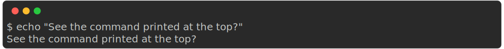
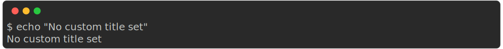

Tweaks
Snippet syntax
If snippets can be parsed as JSON, they will be automatically reformatted (pretty-printed) and set to use JSON code syntax colouring. Otherwise they will be printed as white text by default.
To use coloured syntax highlighting on your non-JSON code snippets, you need to tell rich-codex what syntax to use with the --snippet-syntax / $SNIPPET_SYNTAX / snippet_syntax option (CLI, env var, action/config).
Syntax highlighting is done using rich which uses Pygments. Any language supported by Pygments should work.
<!-- RICH-CODEX
snippet_syntax: "C++"
snippet: |
include <iostream>
int main() {
std::cout << "Hello World!";
return 0;
}
-->

Hiding the command
By default, rich-codex shows a command prompt with the command that was used to generate the iamge.
This can be disabled by setting using --hide-command / $HIDE_COMMAND / hide_command (CLI, env var, action/config).
Default:
With hide_command set to true:
<!-- RICH-CODEX hide_command: true -->

Showing the command in the title
Rich-codex sets the title in the screenshot only if you provide it (config or as title text in the markdown image). If you like you can tell rich-codex to always use a title, with the command (or fake command) used if the title is not explicitly set.
Do this with the --title-command / $TITLE_COMMAND / title_command (CLI, env var, action/config).
Default:
With title_command set to true:
Truncating content
If your tool produces a lot of output you can show just the beginning or end of output. You can set the number of lines of output that you would like to show using: (CLI, env var, action/config)
--head/$RC_HEAD/head--tail/$RC_TAIL/tail
<!-- RICH-CODEX { head: 10, tail: 8 } -->

If the number you set is larger than the amount of output then all output will be shown as usual.
Tip
Remember that you can set both head and tail to remove just the middle section of output 🚀
By default, if any output is truncated a line will be printed: [..truncated..].
You can customise this text using --truncated-text / $TRUNCATED_TEXT / truncated_text.
Set it to None to omit the line completely.
Trimming content
You can clean off unwanted content based on a string pattern match using --trim-after / $TRIM_AFTER / trim_after.
Set it to a string - if that string is found in the input, no more lines will be printed after that.
No truncated_text is shown for this method currently (could be added if anyone wants it).